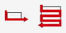
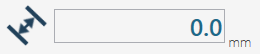
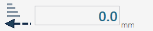
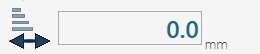
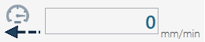
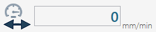

In the new versions of Parametrix it is possible to use the 'Single cut' functionality. Selecting from the list the 'Single Cut' voice, we will find ourselves in front of a page similar to this.
With Single cut it is possible to perform a straight cut (or also inclined) on the slab starting from the position where the machine is located and ending at the length requested by the user. With the cut it is not possible to perform cutting of arcs or of Circles.
Parallel cuts buttons Allows the parallel movement of the machine.
Max The pressure of this button by the operator causes the actual cutting length that can be cut to be given by the current position of the machine and the end of the slab (the end of the slab is calculated with respect to the direction that the machine has at this moment). This value can differ from that written by the user in the text box.
Stop It is used once the machine has started cutting and you decide to reduce the length of the cut. Pressing that button the machine stops and the dimension of the path cut so far is put in the 'Length' text box. Alternatively it is possible to press the appropriate button on the console to obtain the same behavior of the STOP button.

Change Steps Mode Allows to move from 'full step' to 'step' and vice versa.
Save By pressing this button you can save all the parameters within a file to retrieve them later.
Open Pressing this button is visible a window containing all the workings previously saved from the user. It is possible to manage the workings, then load the values, delete the workings or cancel the operation and close the panel.
Based on the type of material that you want to work, it is possible to set the parameters differently and save them in case of subsequent similar workings.
Length of single cut It is necessary to insert the length of the cut to be executed, to be able to carry out the working. If naturally the value exceeds that which effectively can be cut, the machine stops before.

Measure displacement Indicate the distance between one cut and the next in this field it is possible to set only positive values. To carry out the surfacing, it is advisable to set a 'move value' about 80% compared tool thickness.
Penetration in the material proceeding forward Indicates the cutting depth on the material when the machine cuts toward the disk’s rotation direction.

Penetration in the material proceeding backward Indicates the depth of cutting on the material in the cutting phase in the opposite direction to the tool's direction.

Penetration in the material for the last pass Indicate the depth of cut that the last pass of the tool on the material must have. This cut is always in the opposite direction to the movement of the disk.
Processing speed proceeding forward Indicate desired speed for the cutting phase in incoming. Such measure is expressed in millimeters per minute.

Processing speed proceeding backward Indicate desired speed for the cutting phase in the return. Such measurement is expressed in millimeters per minute.
Way in speed into the material Determines the speed during the phase of penetration of the tool in the material. Such measurement is expressed in millimeters per minute.

Speed of working of the last pass Indicate the speed that the machine must keep on the cut in the last pass. That measure is expressed in millimeters per minute.
Speed of way in Determines the speed during the phase of the tool's penetration on the material. Such measurement is expressed in millimeters per minute.
Processing speed proceeding forward Indicate desired speed for the cutting phase in approach. Such measure is expressed in millimeters per minute.
To begin working, place first the machine in the desired starting point. Once correctly placed, it is necessary to insert the value of the cut length in the appropriate field.
At this point, you can proceed with turning on the disk using the controls on the monitor's keypad. When everything is ready, start the process by pressing the 'Start cycle' button.
The working will start in the direction in which the machine is located at the time of the cut activation, therefore it is important to check its orientation before starting the cycle.